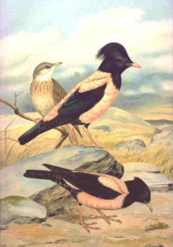
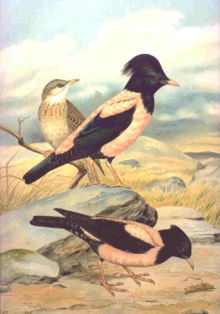

| Rosy Starling | |
|---|---|
|  | |
| Summer plumages: Adult male (center). female (below), and juvenile (behind) |
|
| Conservation status | |
| Binomial name | |
| Sturnus roseus (Linnaeus, 1758) |
|
| Synonyms | |
|
Pastor roseus See text. |
| Rosy Starling | |
|---|---|
|  | |
| Summer plumages: Adult male (center). female (below), and juvenile (behind) |
|
| Conservation status | |
| Binomial name | |
| Sturnus roseus (Linnaeus, 1758) |
|
| Synonyms | |
|
Pastor roseus See text. |
The Rosy Starling, or Rose-coloured Starling, Sturnus roseus is a passerine bird in the starling family Sturnidae. It is sometimes given its own, monotypic genus Pastor; a split supported by recent studies; its closest living relatives are still not certainly known (Jønsson & Fjeldså 2006).
The breeding range of this bird is from easternmost Europe across temperate southern Asia. It is a strong migrant, and winters in India and tropical Asia. In India in winter, it often appears to outnumber the local starlings and mynas. The adult of this species is highly distinctive, with its pink body, pale orange legs and bill, and glossy black head, wings and tail. Males in the breeding season have elongated head feathers which form a wispy crest that is fluffed and more prominent when the bird gets excited; the crest is shorter in winter and the black areas have paler feather edges, which get worn away as well as the black becoming more glossy in the breeding season. Winter plumage in males is rather dull
Females have a short crest and are duller overall, especially without the sharp separation between pink and black. The juvenile can be distinguished from Common Starling, Sturnus vulgarus by its obviously paler plumage and short yellow bill. Young birds molt into a subdued version of the adult plumage, lacking the crest, in autumn and acquire the adult plumage when they are nearly one year old in females, and nearly two years in males. The latter in their second year wear a plumage similar to adult females but with longer crests and noticeably pale feather edges.
The Rosy Starling is a bird of steppe and open agricultural land. In years when grasshoppers and other insects are abundant, it will erupt well beyond its core range, with significant numbers reaching France and the UK.
This is a colonial breeder, and like other starlings, is highly gregarious, forming large winter flocks. It also shares the other species' omnivorous diet, although with a preference for insects.
The song is a typical starling mixture of squeaks and rattles, given with much wing trembling.

{kind=link}
_near_Hyderabad_W2_IMG_4837.jpg){kind=link}
_I_Malaysia_005.jpg){kind=link}